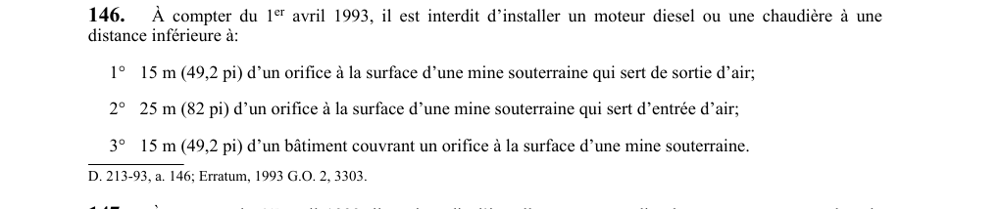

art-146-RSSM : distance moteur diesel et orifice
Un article du wiki ⚖️ Recueil législatif
En bref
À compter du 1er avril 1993, il est interdit d'installer un moteur diesel ou une chaudière à moins de 15 m. Cette obligation vise l'employeur.
- À moins de 25 m (82 pi) d'un orifice servant d'entrée d'air.
- À compter du 1er avril 1993.
- Au moins 15 m (49,2 pi) d'un orifice sortie d'air.
- Au moins 25 m (82 pi) d'un orifice entrée d'air.
- Au moins 15 m (49,2 pi) d'un bâtiment couvrant un orifice.
🌐 LegisQuébec · 📄 PDF officiel
Texte officiel : capture du PDF

Toucher l'image pour l'agrandir🔗 Voir art. 146 RSSM dans le PDF (page 50)
Version : texte officiel du RSSM (RLRQ c. S-2.1, r. 14), à jour au 1er mai 2024 — Éditeur officiel du Québec
Voir aussi
- art. 144 : structure machine extraction incombustible · obligation : si une machine d'extraction est installée au-dessus d'un puits, la structure qui la supporte et l'abrite doit être construite avec des matériaux incombustibles.
- art. 145 : distance moteur non diesel orifice · interdiction : il est interdit d'installer un moteur à combustion interne autre qu'un moteur diesel à moins de 23 m (75,5 pi) du bâtiment abritant une machine d'extraction, et à moins de 30 m (98,4 pi) d'un orifice à la surface d'une mine souterraine ou du bâtiment le recouvrant.
- art. 147 : diesel interdit salle d'extraction · interdiction : à compter du 1er avril 1993, il est interdit d'installer un moteur diesel ou un compresseur dans la salle d'une machine d'extraction ; à compter du 2 novembre 1995, si cette salle fait partie intégrante d'un bâtiment, elle doit avoir une résistance au feu d'au moins une heure.
- art. 148 : chauffage à l'huile conforme · obligation : une installation pour le chauffage à l'huile de l'air d'une mine souterraine doit être pourvue de réservoirs situés à un niveau inférieur à celui des brûleurs et conforme à la norme ACNOR B139-1976 et à son supplément ACNOR B139S1-1982.
- ⚖️ Loi habilitante : LSST
- ↑ Index du bloc : Soutènement
Pages qui pointent ici (5)
- art-144-RSSM : structure machine extraction incombustible Recueil législatif
- art-145-RSSM : distance moteur non diesel orifice Recueil législatif
- art-147-RSSM : diesel interdit salle d'extraction Recueil législatif
- art-148-RSSM : chauffage à l'huile conforme Recueil législatif
- RSSM : Soutènement (art. 131 à 160) Recueil législatif